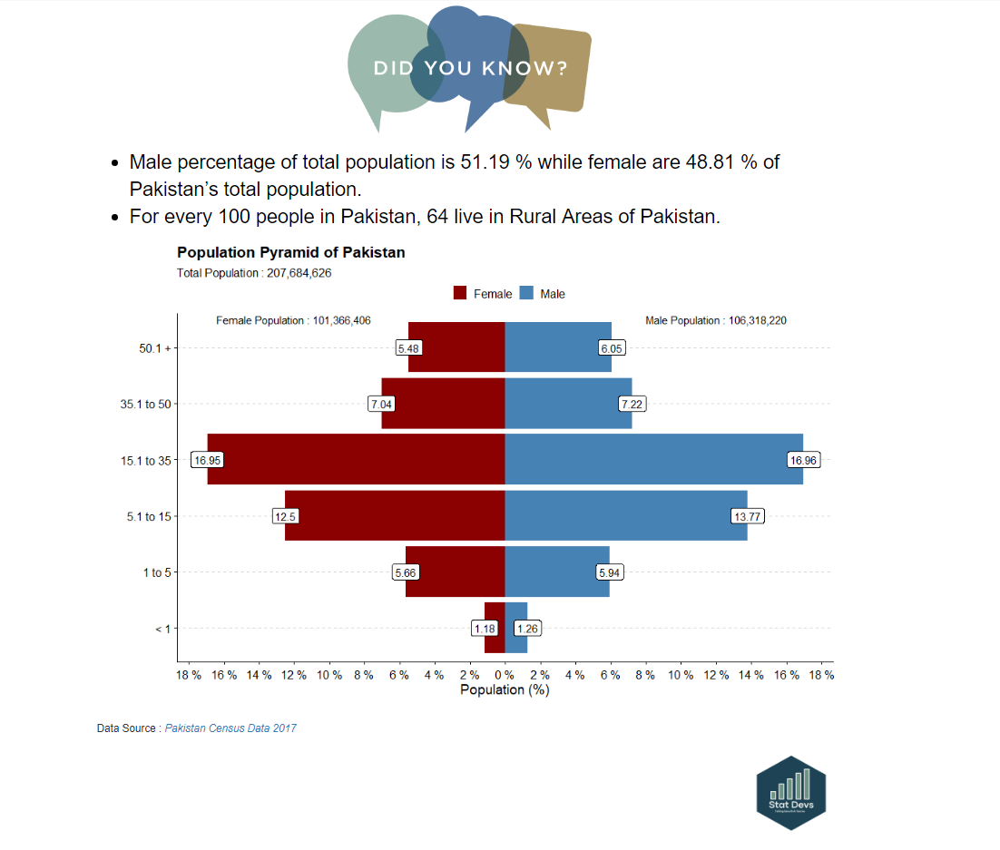
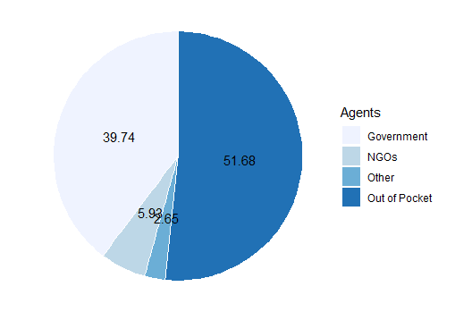
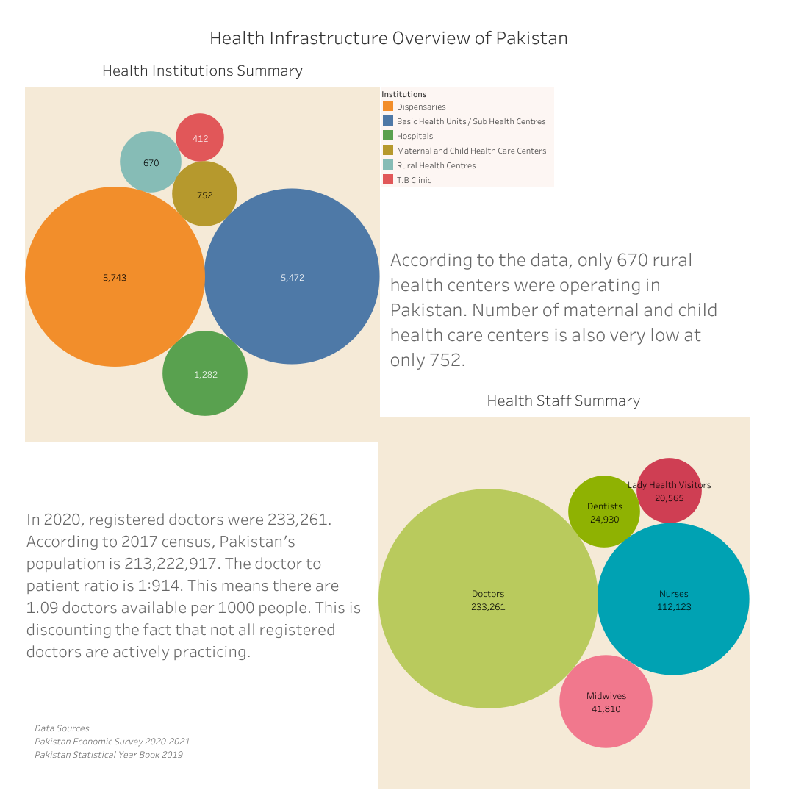
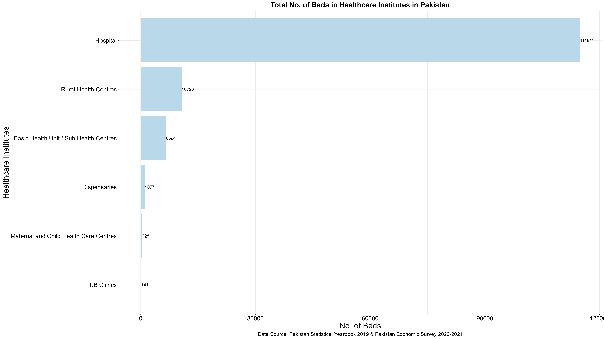
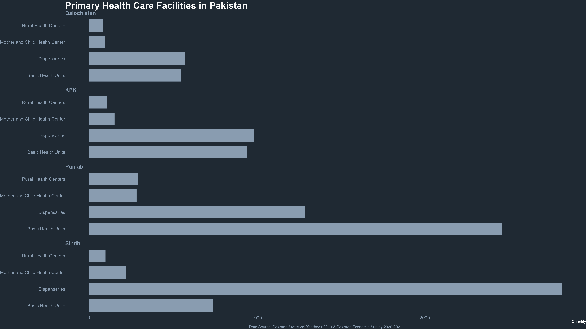
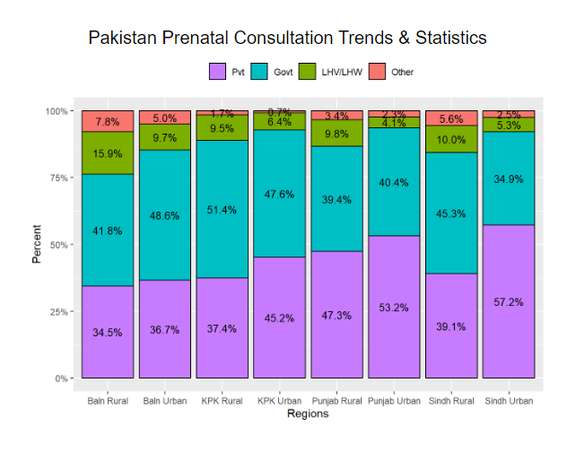

Pakistan Health Infrastructure Outlook
Introduction to Exploratory Sunday
Exploratory Sunday is a social awareness campaign initiated by StatDevs.
Every Sunday, we post weekly statistics and visualizations concentrating on Pakistan’s demographic, healthcare and socio-economic indicators.
The aim of this compaign is to raise awareness to masses about how Pakistan’s conditions stack up against Sustainable Development Goals.
These posts are made using Open Source data sets such as PDHS(2017-18), PSLM(2019-20), Pakistan Census (2017) data.
How is Pakistan demographically distributed?

Pakistan sits in Lower Income group in Global Health Spending

On average 52% of health financing is Out of Pocket Expenditure in Pakistan

What is Pakistan’s Health Infrastruce Outlook?

More RHCs & BHUs are needed to cover the health disparity in Pakistan

Supply of Health Infrastructure is low in Balochistan

Balochistan lacks prenatal consultation by health specialist

Call to Action
Pakistan’s healthcare system relies predominantly on Out-of Pocket financing.
Spatial disparities in access to basic to health necessities has widened in Pakistan.
The burden of out-of-pocket expenditure is much greater for poor households than rich ones.
Ensuring implementation and monitoring the correctness of the laws by health system governance can help reduce OOP payments and can improve Pakistan Health Infrastructure.